The Mandalorian es una serie de televisión que sigue las aventuras de un cazarrecompensas solitario, también conocido como "Mando", en un universo de Star Wars después de la caída del Imperio. El Mando acepta un trabajo para capturar a un objetivo, que resulta ser un niño de la misma especie que Yoda, y se convierte en su protector. La historia sigue al Mando y al niño mientras viajan a través de la galaxia y se enfrentan a una variedad de enemigos, mientras buscan un lugar seguro para el niño y descubren más sobre su pasado y su cultura Mandaloriana.


"Stranger Things" es una serie de televisión de ciencia ficción y horror ambientada en los años 80 en un pequeño pueblo de Indiana. La trama sigue a un grupo de amigos mientras investigan la misteriosa desaparición de uno de ellos y descubren fuerzas sobrenaturales que amenazan su comunidad. La serie se centra en temas como la amistad, el amor, la familia y la lucha contra el mal.
 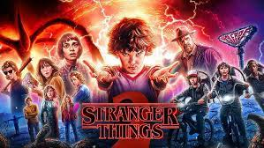
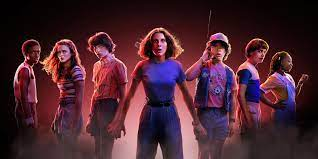
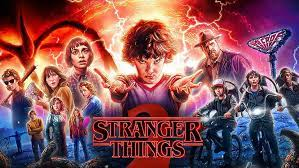
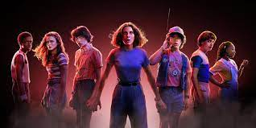
"The Witcher" es una serie de televisión de fantasía oscura basada en la serie de libros del mismo nombre del escritor polaco Andrzej Sapkowski. La trama sigue a Geralt de Rivia, un cazador de monstruos solitario que lucha por sobrevivir en un mundo peligroso lleno de criaturas sobrenaturales y personas ambiciosas. A medida que se aventura a través de diversos reinos, se ve envuelto en una trama más grande que involucra a poderosos hechiceros, princesas en apuros y guerras sangrientas.
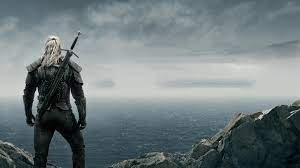 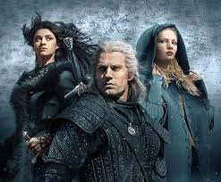 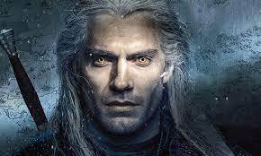"Arcane" es una serie de televisión de animación creada por Riot Games, la compañía detrás del popular juego en línea "League of Legends". La trama se centra en las hermanas Vi y Jinx, que crecen en las peligrosas calles de la ciudad de Piltover y la zona baja de Zaun. A medida que luchan por sobrevivir en mundos opuestos, descubren secretos oscuros y poderes mágicos que amenazan con destruir todo lo que conocen.
 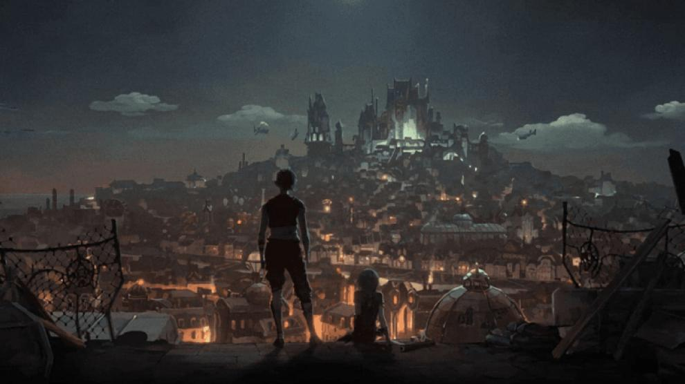
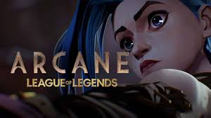
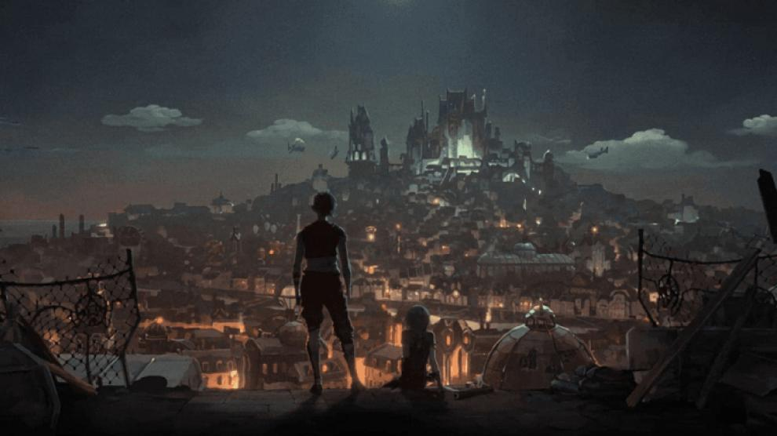
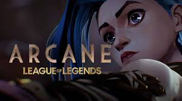